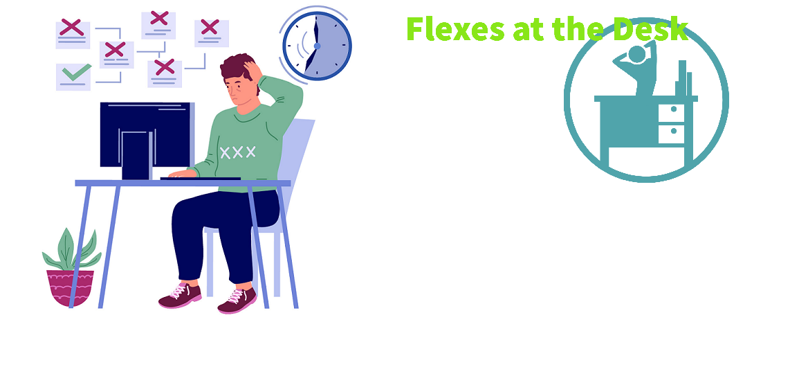

Flexes at the Desk

Jedds Tree Care is a complete yard service including branch trimming, pruning,
stump removal and emergency tree removal. We offer same day emergency service 24/7.
Jedds operates out of East Lansing, MI, but also serves the surrounding counties
for your urban and rural needs. We provide tree and yard care for both commercial
and residential clients. Customer satisfaction is our primary goal.
Our business is fully insured. Safety is our number one priority. We have professional arborists on staff to deal with your special needs and we can handle any job, large or small.
Jedds Tree Care201 Edward Ave.
Lansing, MI 48930
email: jeddstree@example.com
phone: 517.555.4811